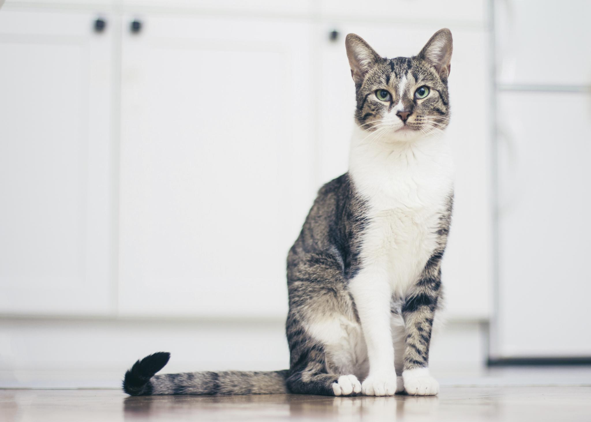
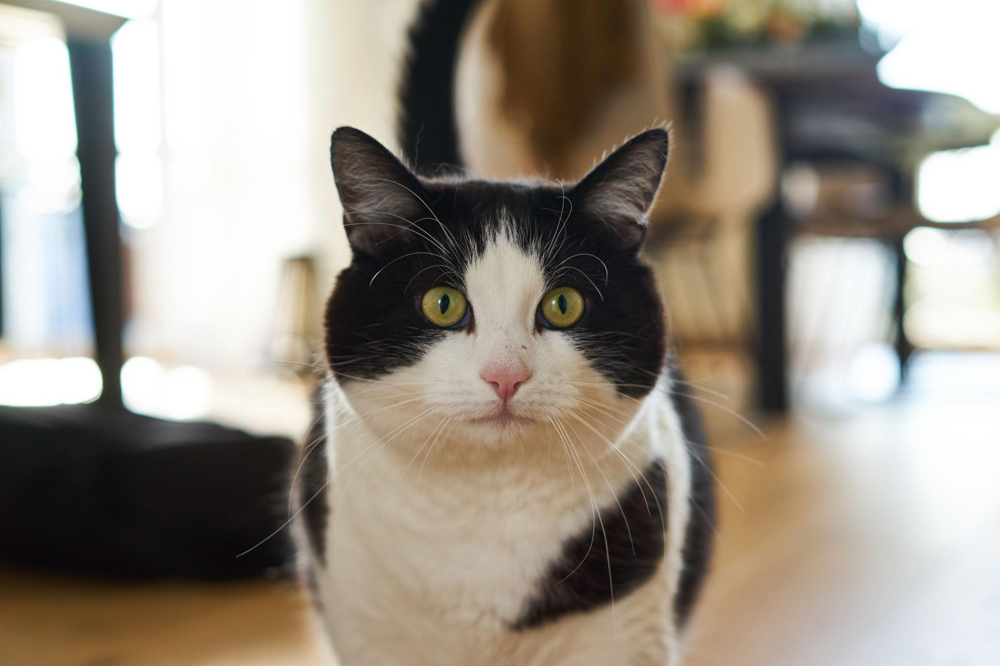
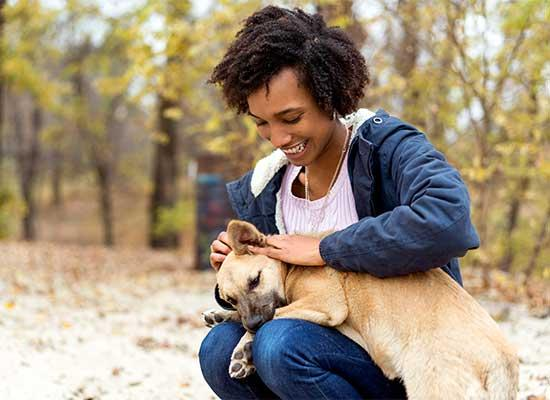

Dog | Young Adult
Buddy
Buddy is cheerful and playful. He enjoys walks, toys, and spending time with people.
- Energy: High
- Enjoys: Walks and games
Dog | Young Adult
Buddy is cheerful and playful. He enjoys walks, toys, and spending time with people.

Cat | Adult
Luna is calm and curious. She enjoys sunny windows, quiet rooms, and gentle attention.
Dog | Puppy
Coco is affectionate and curious. Coco needs patient training, play, and a regular routine.

Cat | Young Adult
Pepper is independent but affectionate and likes comfortable places and toys.
Note: These pet profiles and the email address are fictional examples for this student project, not live adoption listings.
Before your visit
Preparing questions ahead of time can help you make a responsible decision.
Learn more from Adopt a Pet or visit SNIPSA .
